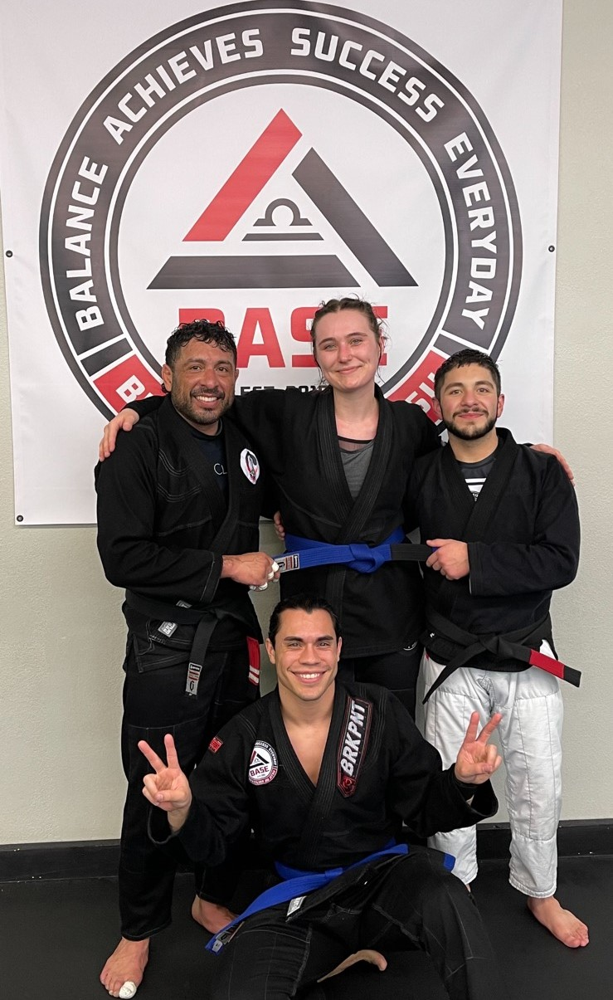
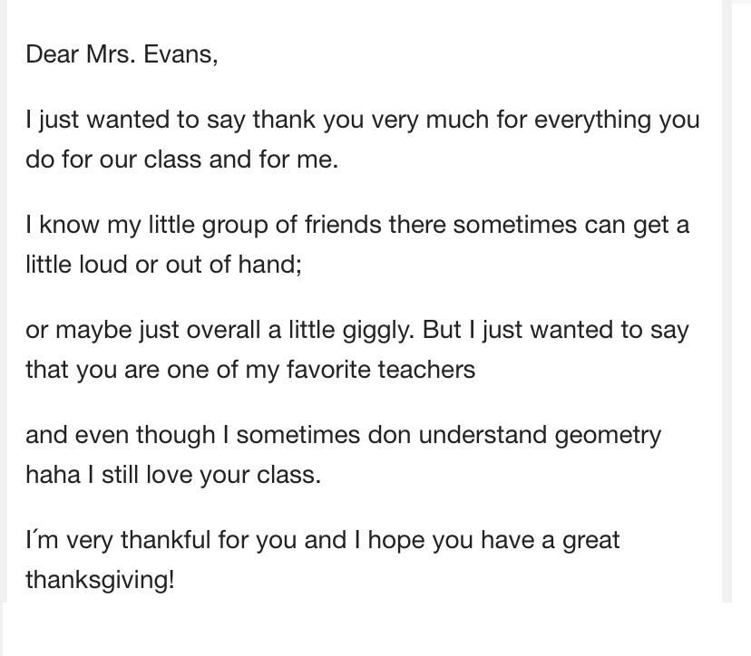
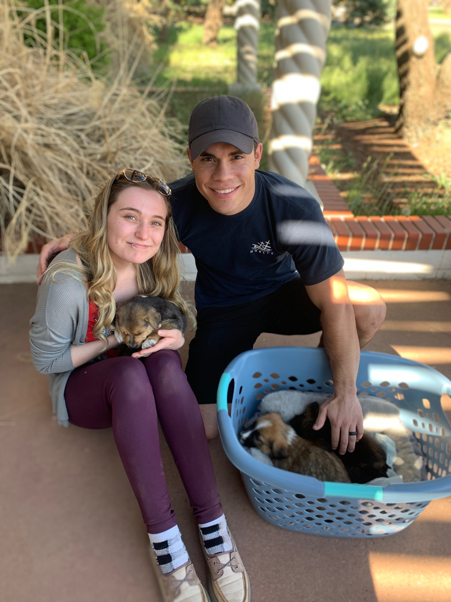

About Me
What I do for fun!
January 2021 marked a huge positive change in my life, I began practicing Brazilian Jiu Jitsu. This sport allowed me the opportunity to clear my mind from the chaos of life and focus on strategic methods out of intense situations. BJJ has taught me to be more considerate, self aware, patient, disciplined and understanding as a person.
What I did before Coding!
I decided in my early adult life that I must tackle the obstacles that I deem to be impossible. At 18 years old, the toughest obstacle I had encountered was working with children. Thus began my journey to become a mentor and a teacher. I went on to work with children of all ages in after school care, summer programs, STEM based programs, and finally teaching at the high school level. This was a very influential time of my life which taught me that I can acheive and excel in even the most strenuous of environments.
About My life!
My home life consists of family time. My family is built up of close friends, relatives, and furry friends whom I've adopted. My husband and I have adopted several animals together that make up the core of my family. We have shared our love with many relatives on both sides of the aisle. We have also made connections with many strangers who have become such a large part of our lives that to consider them anything less than family would be a travesty.